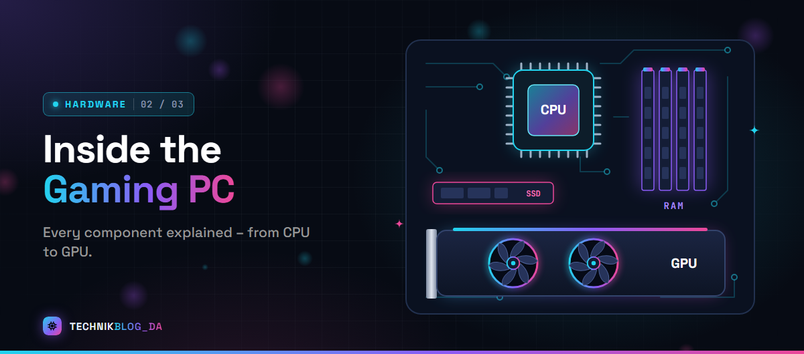

What is hardware?
Hardware PC vs. Console
From humming fans and hand-picked graphics cards to the simple click of a controller — two worlds, one passion, and a question every gamer asks at least once.

Date: 15.11.2026

Reading time: 8 min.

Read: 67
Shared: 8
Daniel Samoz
Should you build a gaming PC or buy a console? It is one of the oldest debates in gaming, and in 2026 it is more interesting than ever. Rising memory prices, new consoles and a certain open-world game launching on November 19 have shaken things up. On this page, we open the case, compare both worlds side by side and bust a few myths, so you can decide what fits the way you play.
Let's move on to the article

What's inside a gaming machine?
Every gaming PC is built from the same handful of parts. Once you know what each one does, hardware stops being a mystery:
- CPU (processor): The brain. It runs the game logic, physics and AI.
- GPU (graphics card): Draws every frame you see. For gaming, it matters most.
- RAM (memory): The short-term memory that holds everything the game needs right now.
- SSD (storage): Keeps your games and decides how fast they load.
- Motherboard: Connects all parts so they can talk to each other.
- Power supply and cooling: Deliver clean power and keep everything from overheating.

A console is a PC in disguise
Open a PlayStation 5 or an Xbox Series X|S and you will find the same building blocks: a processor, graphics, memory and an SSD. Both use custom chips from AMD that combine processor and graphics on one chip. The Nintendo Switch 2 relies on a custom chip from Nvidia. The big difference: every console of one model is identical. Developers know exactly which hardware they are working with, so they can squeeze every last frame out of it.
PC vs. console at a glance
| PC | Console | |
|---|---|---|
| Price to start | Higher, depends on the parts | Fixed price per model |
| Performance | Grows with your budget | Same for everyone, highly optimized |
| Upgrades | Swap single parts | Buy a new console or a Pro model |
| Online multiplayer | Free in most games | Usually needs a subscription |
| Games | Huge library, frequent sales, mods | Exclusives such as Mario and Zelda |
| Comfort | Desk setup, more tinkering | Couch, plug and play |
2026: the year of the RAM crisis
AI is changing gaming in a way nobody expected. Data centers for artificial intelligence need enormous amounts of memory, so manufacturers sell more of their chips there and fewer to gamers. Toward the end of 2025, RAM prices roughly quadrupled within just two months, and Nintendo reportedly paid 41% more for the memory in the Switch 2 in a single quarter (Axios). For the first time in years, some experts say a PS5 can be better value than a custom-built gaming PC.

Myth check
- "PC gaming is always more expensive." Not quite. The hardware costs more at the start, but PC games are often on sale, and online multiplayer is free in most games. On consoles, online play usually needs a paid subscription.
- "You need the newest graphics card." In 2025, 64% of all PC gaming time went to games released before 2019 (Newzoo). Most of them run fine on older hardware.
- "Consoles are outdated after two years." A console generation usually lasts about seven years, and developers keep optimizing for it the whole time.
Which one fits you?
Choose a console if you...
- Want to plug in and play right away
- Love gaming on the couch with friends
- Want Nintendo or PlayStation exclusives
- Prefer a fixed budget
Choose a PC if you...
- Love mods and tinkering
- Want to upgrade step by step
- Play with keyboard and mouse
- Also need a computer for school, work or streaming
Pro tips
-
Plug your monitor into the graphics card, not the motherboard. Otherwise your expensive GPU does nothing at all.
-
Turn on XMP or EXPO in the BIOS. Without it, your RAM runs slower than the speed printed on the box.
-
Peel the protective film off the CPU cooler before you mount it. It happens more often than you think!
-
Never save money on the power supply. A cheap, weak PSU can make your whole PC unstable.
So, who wins?
Neither. A console gives you comfort and great value, a PC gives you freedom and power. The best platform is the one that fits your games, your friends and your budget. And if you really can't decide: many gamers simply have both.
Follow me for more content like this, and
share the article with your friends!